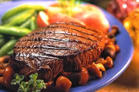

Beaf Steak

Description
- A beefsteak, often called just steak,
is a flat cut of beef with parallel faces,
usually cut perpendicular to the muscle fibers.
In common restaurant service a single serving has a raw
mass ranging from 120 to 600 grams (4 to 21 oz).
Beef steaks are usually grilled, pan-fried, or broiled.
OLD PRICE 1799
NEW PRICE 1599
Back To Main Page